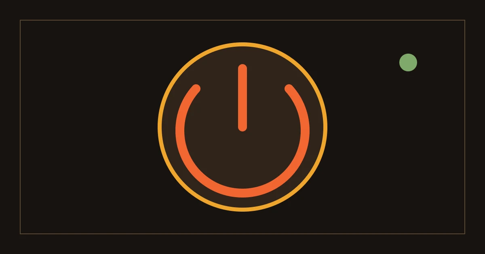

%%A12_EYEBROW%%
%%A12_TITLE%%
%%A12_SUMMARY%%- 编写
- %%AUTHOR_NAME%%
- 发布
- 复核

%%A12_TOC_LABEL%%
%%A12_SECTION_LABEL_1%%%%A12_END_MARK%%
%%A12_H2_1%%
%%A12_BODY_1_A%%
%%A12_END_TITLE%%
%%A12_END_TEXT%%
- %%A12_END_LABEL_1%%
- %%A12_END_NOTE_1%%
- %%A12_END_LABEL_2%%
- %%A12_END_NOTE_2%%
%%A12_BODY_1_B%%
%%A12_SECTION_LABEL_2%%
%%A12_H2_2%%
%%A12_BODY_2_A%%
%%A12_BODY_2_B%%
%%A12_SECTION_LABEL_3%%
%%A12_H2_3%%
%%A12_BODY_3_A%%
%%A12_BODY_3_B%%
%%A12_SECTION_LABEL_4%%
%%A12_H2_4%%
%%A12_BODY_4_A%%
%%A12_BODY_4_B%%
%%A12_FAQ_TITLE%%
%%A12_FAQ_Q_1%%
%%A12_FAQ_A_1%%
%%A12_FAQ_Q_2%%
%%A12_FAQ_A_2%%